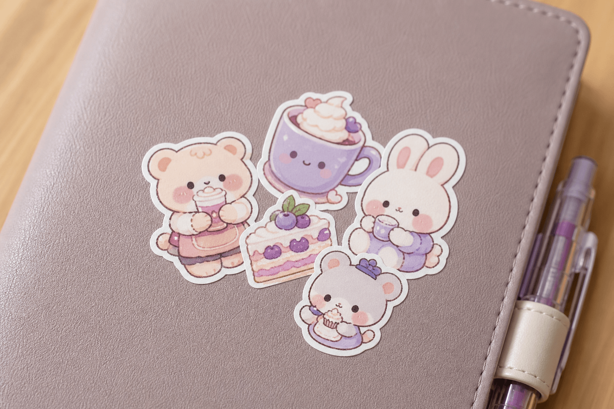
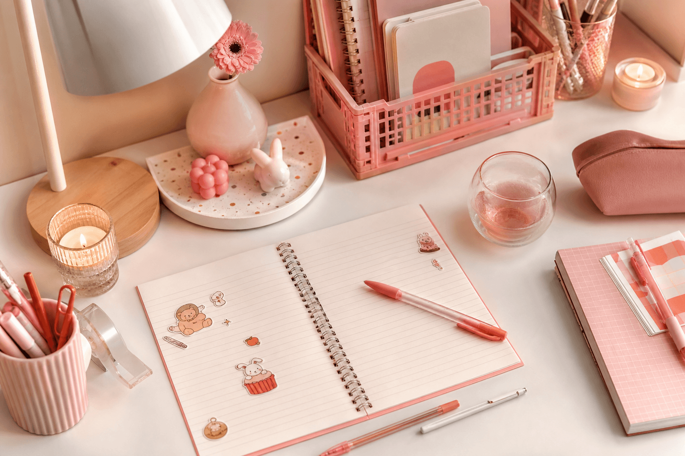
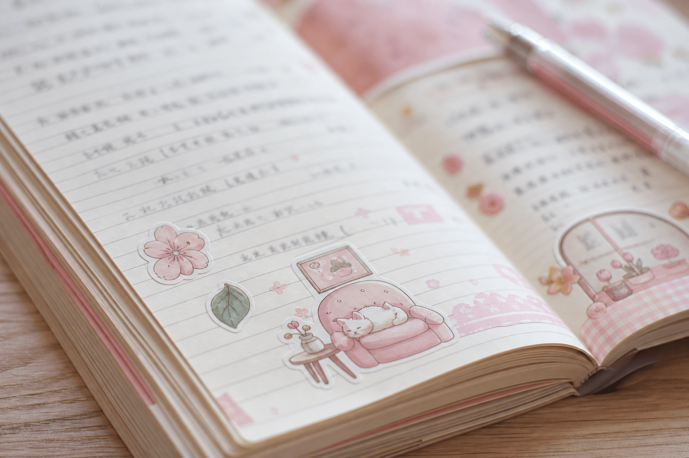

Scrapbook biến trang vở thành “vũ trụ cảm xúc” riêng — dán ảnh photobooth, sticker, ghi lời nhắn mỗi ngày. Kết hợp với study aesthetic, bạn vừa học vừa có góc bàn đẹp để chia sẻ TikTok. Bài viết hướng dẫn scrapbook cho học sinh từ A–Z: 4 bước làm trang, dụng cụ, ý tưởng decor và mẹo quay video study with me.
1. Scrapbook & study aesthetic là gì?
Scrapbook (sổ tay cắt dán) là hình thức lưu giữ kỷ niệm bằng ảnh, sticker, vé, tem và chữ viết tay — mỗi trang kể một câu chuyện. Study aesthetic là phong cách góc học tập đẹp, gọn, tone màu đồng bộ — thường xuất hiện trong video study with me trên TikTok.
Hai xu hướng này thường đi cùng nhau: teen decor sổ scrapbook trên bàn học aesthetic, quay clip vừa dán sticker vừa ôn bài — content vừa thư giãn vừa truyền cảm hứng học tập.
2. Scrapbook khác gì bullet journal?
| Tiêu chí | Scrapbook | Bullet journal |
|---|---|---|
| Mục đích chính | Kỷ niệm, cảm xúc, hình ảnh | Kế hoạch, task, habit tracker |
| Nội dung | Ảnh, ticket, sticker decor | Bullet, lịch, danh sách việc |
| Tần suất | Khi có kỷ niệm mới (event, đi chơi) | Hàng ngày / hàng tuần |
| Độ “nghệ thuật” | Cao — nhiều layer, ảnh, màu | Tuỳ phong cách — từ minimalist đến colorful |
| Kết hợp | Có thể xen kẽ trong cùng sổ — trang planner + trang scrapbook | |
Xem thêm bullet journal cho học sinh nếu bạn muốn kết hợp quản lý deadline với decor kỷ niệm.
3. 4 bước làm scrapbook đơn giản tại nhà
Bước 1: Chọn chủ đề trang
Đặt tên rõ ràng: “Tuần này”, “Bestie forever”, “Concert”, “Mood tháng 8”, “Summer trip” — giúp trang có câu chuyện, không thành “dán bừa”.
Bước 2: Dán ảnh / ticket / tem
Ảnh photobooth, vé xem phim, tem trà sữa, wristband concert — vật nhỏ gợi nhớ. Sắp xếp trước khi dán keo, thử layout trên mặt bàn.
Bước 3: Thêm sticker decor
Icon cảm xúc, khung viền ảnh, chữ quote cute, hoa nhỏ — lấp khoảng trống mà không che ảnh chính. Chọn 1 chủ đề sticker (Mèo Kem, pastel…) cho trang nhìn gọn.
Bước 4: Viết note tay
2–3 dòng cảm nhận bằng bút gel — ngày tháng, tên bạn, cảm xúc. Chữ viết tay tạo “chất” riêng mà font in không có.

4. Dụng cụ scrapbook cần có
Icon, khung viền, chữ quote — Mèo Kem, pastel.
A5, giấy dày 100gsm+ nếu dán nhiều layer.
Viết note, kẻ viền, đánh dấu ngày.
Cửa hàng photocopy in 4x6 hoặc 5x7.
Dán ảnh phẳng, không nhăn.
Tuỳ chọn — viền trang, gắn ticket.
5. Study aesthetic: setup góc học tập để quay TikTok
Góc học “ăn ảnh” cần vài yếu tố cốt lõi — không cần phòng lớn hay decor đắt:
| Yếu tố | Gợi ý | Lý do |
|---|---|---|
| Ánh sáng | Cửa sổ hoặc đèn bàn 4000K–5000K | Mềm, không chói — video & ảnh đẹp hơn |
| Mặt bàn | Chỉ 3–5 món: sổ, bút, sticker, ly nước | Gọn = aesthetic |
| Màu chủ đạo | Hồng–kem (#ee5f6d) hoặc mint–trắng | Đồng bộ sticker, sổ, bút |
| Góc quay | 45° từ trên — thấy tay viết + decor | Chuẩn study with me TikTok |
| Background | Tường trắng/be hoặc kệ gọn | Không rối, focus vào sổ |

6. 8 ý tưởng trang scrapbook cho học sinh
- “Tuần của tôi” — ảnh highlight 7 ngày + sticker icon mỗi ngày.
- “Bestie page” — photobooth nhóm, quote friendship, sticker matching.
- “Concert / fan meeting” — vé, wristband, ảnh idol, mood tracker cảm xúc.
- “Mood tháng” — grid 30 ô, tô màu/sticker theo cảm xúc mỗi ngày.
- “Food diary” — ảnh đồ ăn, tem trà sữa, sticker đồ uống cute.
- “Study wins” — giấy kiểm tra điểm cao (che tên), sticker ngôi sao.
- “Travel mini” — vé xe, tem bưu điện, ảnh landmark — dù chỉ đi 1 ngày.
- “Goals 2026” — viết mục tiêu năm, decor vision board bằng sticker.
7. Mẹo quay TikTok study with me + scrapbook
- Quay time-lapse — 30–60 giây dán sticker + viết note → đủ hook.
- Nhạc nền trending — chọn nhạc study aesthetic / lo-fi phổ biến trên TikTok.
- Text overlay — “POV: decor scrapbook sau giờ học”, “study with me 🎀”.
- Hashtag — #scrapbookvn #studyaesthetic #studywithme #kemstore #decorvở.
- Quay cùng góc bàn — series “scrapbook day 1, 2, 3…” tạo follow.
- Flatlay cuối video — chụp trang hoàn thiện từ trên xuống làm thumbnail.

8. Lỗi thường gặp khi làm scrapbook
- Dán quá nhiều sticker — trang rối, che mất ảnh và chữ.
- Không có chủ đề — trang thành “hỗn hợp” không kể được câu chuyện.
- Keo quá nhiều — giấy nhăn, ảnh không phẳng. Dùng lượng vừa đủ.
- Trộn quá nhiều phong cách sticker — Y2K + vintage + cute trên 1 trang.
- Bỏ qua chữ viết tay — thiếu “linh hồn” cá nhân của scrapbook.
- Sổ giấy mỏng — trang bị cong khi dán nhiều layer ảnh + sticker.
9. Câu hỏi thường gặp (FAQ)
Scrapbook khác bullet journal thế nào?
Scrapbook tập trung hình ảnh, cảm xúc, kỷ niệm. Bullet journal tập trung kế hoạch và task. Có thể kết hợp cả hai trong cùng một sổ.
Cần gì để bắt đầu scrapbook học sinh?
Sổ blank, sticker, bút gel, ảnh in. Combo scrapbook trên KemStore có đủ bộ — tiết kiệm hơn mua lẻ.
Study aesthetic là gì?
Phong cách góc học đẹp, gọn, tone màu đồng bộ — thường quay study with me trên TikTok. Kết hợp bàn học + sổ scrapbook decor.
Sticker nào phù hợp scrapbook?
Die-cut, icon cảm xúc, khung viền ảnh, chữ quote. KemStore có 500+ mẫu Mèo Kem tone pastel.
Kết luận
Scrapbook & study aesthetic là cách teen biến học tập thành trải nghiệm sáng tạo — không cần kỹ năng vẽ, chỉ cần ảnh, sticker và vài dòng chữ tay. Bắt đầu từ 4 bước trong bài, chọn chủ đề trang rõ ràng, setup góc bàn gọn — bạn đã có content TikTok và sổ kỷ niệm mang “chất” riêng suốt năm học.